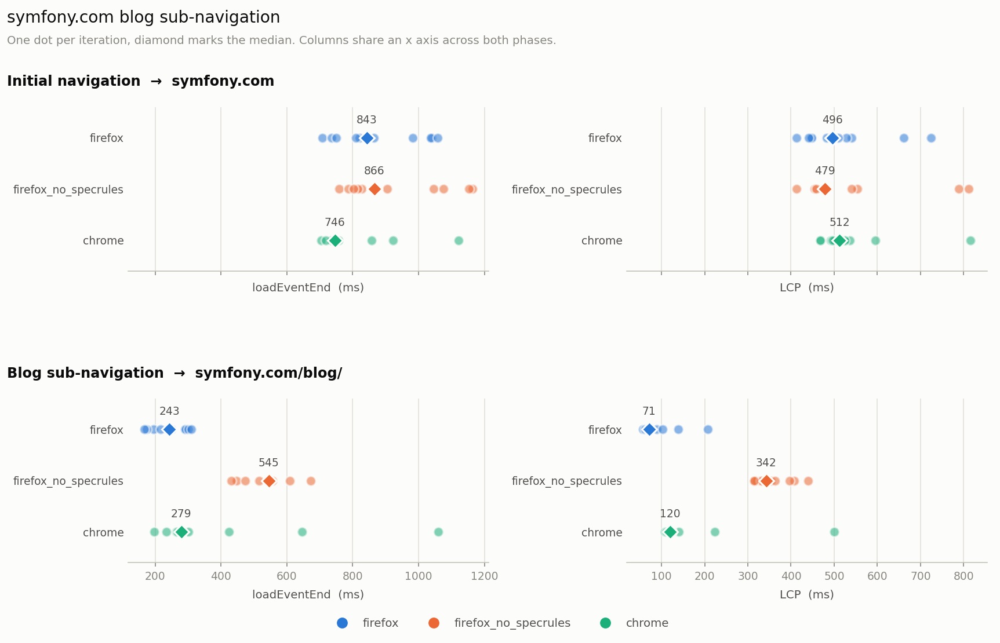

symfony.com blog sub-navigation
Does the page’s speculation-rules prefetch of /blog/ speed up the click from the homepage, and how does Firefox compare with Chrome?
Test
- URL
https://symfony.com/, which prefetches/blog/via speculation rules- Steps
- launch → 30s settle → measure load → 5s → click Blog → measure sub-navigation
- Variants
firefox— firefox 155.0firefox_no_specrules— firefox 155.0 (dom.speculation_rules.enabled=false)chrome— chrome 151.0.0.0- Iterations
- 10 per variant, fresh browser each
Results

Initial navigation → symfony.com
| variant | loadEventEnd | LCP |
|---|---|---|
| firefox | 843 [708–1058] n=10 | 496 [413–724] n=10 |
| firefox_no_specrules | 866 [759–1163] n=10 | 479 [413–812] n=10 |
| chrome | 746 [705–1121] n=10 | 512 [468–816] n=10 |
Blog sub-navigation → symfony.com/blog/
| variant | loadEventEnd | LCP |
|---|---|---|
| firefox | 243 [168–310] n=10 | 71 [57–207] n=10 |
| firefox_no_specrules | 545 [431–673] n=10 | 342 [315–440] n=10 |
| chrome | 279 [197–1060] n=10 | 120 [108–500] n=10 |